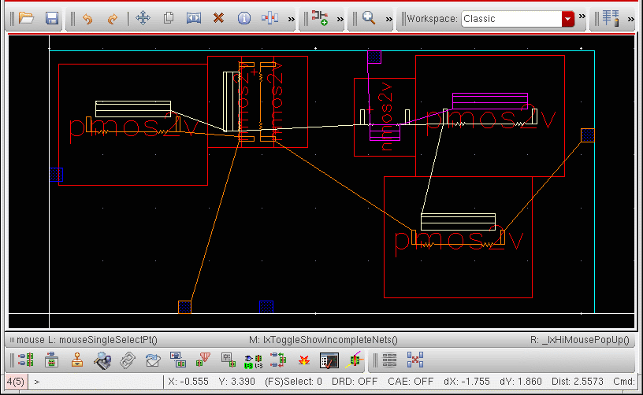
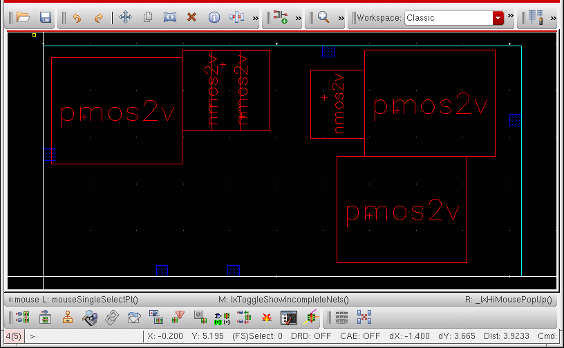

Showing and Hiding Current Incomplete Nets
To show or hide current incomplete nets:
-
Place your cursor in a layout window showing at least one incomplete net.
 -
Choose Connectivity – Incomplete Nets – Show/Hide Current or press
hon your keyboard.
The function hides all the incomplete nets that were visible or partially visible in the canvas. The list of nets that were hidden is stored in the system. -
To make the stored nets visible, choose Connectivity – Incomplete Nets – Show/Hide Current (or press
h) again.
If you run the function for the first time on a design with no incomplete nets on display, it does nothing because there is no stored list of nets to display.
The function does nothing unless the Annotation Browser has been initialized. The assistant itself need not be displayed on the desktop. If you do close the browser, make sure you switch off the Remove highlighting when browser is closed option in the Annotation Browser Options form, otherwise there can be no visible incomplete nets to hide.
When an incomplete net is only partially visible (some of the open markers on the net are visible, others are not) the function considers the incomplete net as fully visible. The first call to the function hides the open markers that are currently visible; the second shows all the open markers associated with the incomplete net.
If you hide all the visible open markers in the canvas, then use the Annotation Browser controls to make an open marker visible, calling Show/Hide Current Incomplete Nets again does not restore the visibility of the previously hidden markers. The function always hides any visible open markers.
If you delete a net, any open markers associated with that net are removed from the stored list and cannot be restored when you run the command again.
Related Topics
Return to top